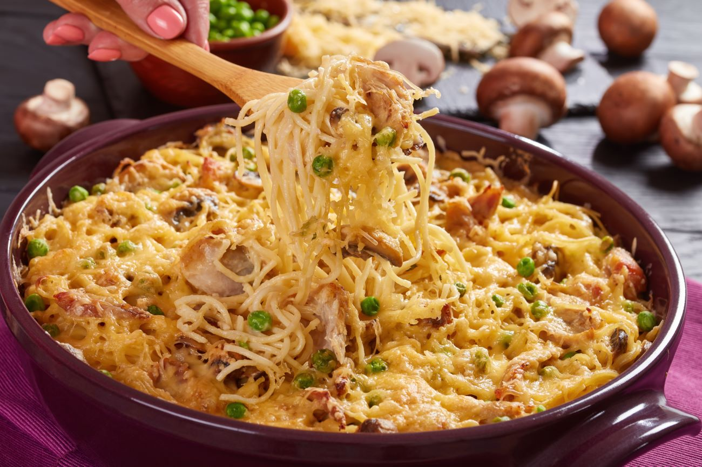

Chicken Pasta

Ingredients:
Bechamel Sauce:
- 4 tbs of Butter
- 4 tbs of Flour
- 2 Cups of Milk
- 1/4 tps of salt
- 1 tsp of Pepper
- 1/2 tsp of Nutmeg
- 1/2 ib of mixed frozen vegetables
- 1 ib chicken breast
- 3/4 box of Elbow Pasta
- 1.5 cups of grated Mozarella Cheese
- 1 cup of grated sharp cheddar or Gruyere or swiss cheese

Preparation:
- Boil the chicken breast in water for about 20 min
until it registers 165F in the thickest part.
- Once the chicken is cooked,
remove from the heat and let cool. Reserve the broth
- Mince the chicken into small pieces
- To Prepare the sauce, melt the butter in a sauce pan.
- Add the flour, mix it with butter and cook
for 1-2 min, at medium heat
- Add the milk slowly while whisking
- Reduce the heat and whisk occasionally
- Once the sauce thickens (about 10 min), add spices
- Add 1/2 cup of the chicken broth
- Taste and adjust accordingly
(I like to have a prominent nutmeg flavor)
- Add the frozen vegetables and minced chicken
- Boil the pasta according to the instructions.
- In a oven pan:
- Mix Pasta and sauce and cover with the cheese.
- Bake uncovered at 350F for 30-40 min until the cheese
melts and becomes golden brown.
- Let it rest for 10 min and serve